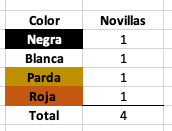
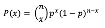
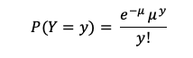

4.1- ¿Qué esla distribución de una variable?
La distribución es la manera de describir el patrón o comportamiento de los datos. Es una función matemática que muestra los posibles valores que toma una variable (peso corporal, producción de leche, alimento consumido etc.) y la frecuencia con que estas variables ocurren dentro de un experimento o dentro de una muestra poblacional. Siempre es muy importante visualizar los datos con los que estamos trabajando para tener idea de como se distribuyen. Por ejemplo, si tomamos el peso de 1000 novillos de 24 meses y con los resultados graficamos un histograma de frecuencias tendremos la siguiente distribución (mas adelante veremos como construir los histogramas de frecuencias en Excel)
El histograma representa de manera gráfica como se reparten los datos. En la gráfica se observa como la mayoría de los datos están concentrados al medio con mas de cien animales por intervalo (eje Y), mientras que los extremos (valores mínimos y máximos) obedecen a unos pocos animales con menos de 20 animales por intervalo. Esto nos podría indicar que el peso de los novillos obedece al parámetro de una curva de distribución normal como lo veremos mas adelante. Las distribuciones las utilizamos para conocer los valores aleatorios que una variable puede tomar en un experimento o en una muestra y la frecuencia con la que ellas ocurren. Del ejemplo anterior podríamos deducir que es muy probable que un animal que escojamos al azar de esa muestra, su peso va a estar mas hacia los intervalos del medio que hacia los extremos.
4.2- Repasemos algunas definiciones
- * Frecuencia :es el número de veces en que un valor determinado o un resultado se repite durante el experimento o aparece en el espacio muestral. Normalmente se representa por medio de un histograma.
- * Probabilidad de una distribución de frecuencia: es una colección de las probabilidades de los posibles resultados de un evento.
- * Función de la probabilidad: es una función que asigna una probabilidad a cada distinto resultado en el espacio muestral. Donde: Y = resultado actual y = es uno de los posibles resultados de Y o sea uno de los valores dentro de la distribución. entonces P(Y = y) es igual a p(y)
- * Población:es el conjunto formado por todos los valores posibles que puede asumir la variable objeto de estudio. Ejemplo: la producción de leche de todas las vacas de la región lechera de un país.
- * Muestra: es cualquier subconjunto de la población escogido al seguir ciertos criterios de selección. Ejemplo: La producción de leche de las vacas del 10% de las fincas de la región lechera.
- * Todos los resultados tienen la misma probabilidad.
- * Todas las barras en el gráfico tienen la misma altura.
- * El valor esperado y la varianza no tienen poder predictivo.
- Caracerísticas principales:
- - Solo acepta un solo ensayo.
- - Solo hay dos posibles resultados (fracaso/error).
- * Mide la frecuencia de ocurrencia de uno de los posibles resultados sobre los n ensayos. Para cada ensayo solo son posibles dos resultados (éxito o fracaso).
- * La probabilidad de éxito debe ser constante (p) y la probabilidad de fracaso igualmente es constante y se representa por 1-p.
- * Cada experimento es independiente del anterior, lo que ocurre en uno no afecta el resultado del otro.
- donde:
- n = número de ensayos/experimentos
- x = número de éxitos
- p= probabilidad de éxito
- (1-p) = probabilidad de fracaso
- El resultado entre paréntesis es el resultado de una combinación sin repetición Cn,x donde:
- n = 6
- x = 4
- p = 65%
- 1-p = 35%
- - Número de pacientes para cirugía en una clínica veterinaria por día (planeación de quirófano).
- - Número células somáticas por ml en leche (identificación de problemas de mastitis clínica).
- - Número de partos en una piara por mes (planificación de número de parideras en la finca).
- P(Y=y) es la probabilidad de y en el intervalo definido
- μ es el valor esperado o media de y
- e es la base de los logaritmos naturales (2.71828)
- * Chao, L.L., 1978. Estadística para las ciencias administrativas. McGraw-Hill Interamericana.
- * Marco Sanjuán, F.J. 2017. Distribución binomial. Economipedia.com
- * Pfaffenberger, R.C. and Patterson, J.H., 1977. Statistical methods for business and economics. Homewood, IL: Richard D. Irwin.
- * Young Julie, 2021. Discrete Distribution. Investopedia.com
4.3- Distribuciones discretas
Una distribución discreta es un una distribución de probabilidad que muestra la ocurrencia de resultados que se pueden contar Young, 2021 , por ejemplo el total de animales nacidos vivos en una camada de cerdos (1,2,3...14) o la probabilidad de una cerda vacía o preñada (0 o 1). Las probabilidades discretas tienen un número finito de resultados, los valores que toma la variable son unidades (1 caballo por pesebrera, 50000 células por campo). Los resultados de la distribución discreta se visualizan en forma tabular en barras alineadas una después de la otra.
4.4- Distribuciones discretas - Uniforme
Es tal vez la distribución discreta mas simple, ya que cada variable tiene las mismas probabilidades de ocurrir.
Las principales propiedades son:
Ejemplo: si tenemos en un corral 4 novillas cada una de color diferente (blanca, negra, parda, roja), ¿Cual es la probabilidad de que salga la novilla blanca?
Entonces, según la formula general de la probabilidad, la novilla blanca tiene ¼ o 25% de probabilidad de salir, esta es la misma probabilidad para cada una de las restantes novillas, donde:
1/4+1/4+1/4+1/4 = 1
No podemos calcular la media, no hay varianza y no hay interés en hacer alguna predicción. Como podemos ver en el gráfico anterior cada color tiene exactamente la misma probabilidad de ser escogido (25% c/u).
4.5- Distribuciones discretas - Bernoulli
Es una distribución que consiste en un solo ensayo y únicamente dos posibles resultados -éxito o fracaso-. En la distribución de Bernoulli no hay forma de predecir el resultado. El ejemplo típico es lanzar la moneda al aire. En un lanzamiento (experimento) solo hay una posibilidad entre dos cara o sello.
Var(Y) = p *(1-p)
A menudo se utiliza la distribución de Bernoulli para determinar el resultado que se espera de un solo ensayo. Ejemplo: una vaca inseminada solo tiene dos posibilidades al chequear: preñada o vacía.
4.6- Distribuciones discretas-Binomial
La distribución binomial es una secuencia de eventos Bernoulli (éxito-fracaso) de la misma naturaleza. Es decir la distribucion binomial repite un experimento n veces y cuantifica los éxitos y los fracasos.
características:
La fórmula de la distribución binaria es:

Ejemplo, En una finca porcicola la actividad reproductiva se realiza por inseminación artificial. Actualmente La tasa de prenez es del 65%. Si tenemos un lote de 6 cerdas para inseminar. ¿Cuál es la probabilidad de que 4 de estas cerdas queden preñadas? Entonces,
Aproximadamente es del 33% la probabilidad de preñar 4 cerdas preñadas dentro de las 6 que se van a inseminar. Si calculamos la probabilidad de preñar cerdas preñadas desde 6 cerdas hasta 0, podemos ver la distribución de probabilidades en el siguiente gráfico y deducir que hay mayores probabilidades de preñar entre 3 y 5 animales con los actuales resultados.
Explicación de la distribución binomial
4.7- Distribucion Binomial en Excel
A pesar de que las fórmulas para calcular las probabilidades de la distribución binomial son relativamente sencillas, la realidad es que realizar estos cálculos en una calculadora normal toman tiempo. Afortunadamente, podemos hacerlo de manera sencilla y rápida en Excel. Para ello lo primero que debemos tener es los datos en una tabla divididos en fracasos y errores. Por ejemplo si son 6 animales seleccionados, si las 6 estan preñadas, en la siguiente columna de vacias pues tendremos 0, en la siguiente fila, si hay 5 preñadas, entonces habrá 1 vacía y así sucesivamente hasta las 6 vacías y 0 preñadas (éxito-fracaso). Tambien debemos incluir el numero de experimentos n, en este caso son 6 cerdas para escoger. La probabilidad p, en este caso es del 65%, que el es porcentaje de animales preñados en el lote y finalmente los éxitos esperados (de 6 hasta 0).
La función de Excel para calcular la distribución binomial se usa la función DISTR.BINOM o BINOM.DIST en inglés. Nos ubicamos en la celda donde deseamos ver el valor, escribimos la función y la fórmula nos solicita el número de éxitos, luego los ensayos, seguido la probabilidad y finalmente la opción verdadero (true) si queremos la función acumulada o falso(para el valor específico), en este caso decidimos falso.
Una vez tenemos los valores asignados damos enter y corremos la función para todas las posibilidades que deseamos calcular sin olvidar asegurar los valores del número de experimentos y probabilidad de éxito (animales preñados). Por ejemplo, para la celda C5 donde se ubica el numero de experimentos, la aseguramos con la opción command + t en una Mac o (option + 4) desde un equipo que corre en Windows. El signo $ debe aparecer antes de las coordenadas de la celda como se observa en la barra de visualización en el recuadro superior.
Como se observa en la columna de la derecha que fue la asignada para ver los resultados de la probabilidad, cada una de las combinaciones de exito/fracaso esta dada por un porcentaje por ejemplo la posibilidad de seleccionar 6 cerdas preñadas es tan solo del 7.5%. La suma de estas probabilidades debe dar 1 o = 100%
Ejemplo de una distribución binomial en Excel
4.8- Distribuciones discretas-Poisson
Cuando queremos saber la probabilidad de un determinado evento Y, que ocurre en un intervalo de tiempo, distancia, área o volumen definidos usamos la distribución de Poisson.
Y∼℘(μ)
La distribución de Poisson solamente depende de un parámetro μ. Tanto la media como la varianza de esta distribución son siempre positivas. Se utiliza para determinar que tan posible es un resultado específico, conociendo con que frecuencia este evento ocurre usualmente. Con la distribución de Poisson podemos hacer planificación de espacios, tiempos, áreas o cualquier otro aspecto que implique un evento que ocurra en un espacio/tiempo/área determinada.
Ejemplos de uso de la distribución de Poisson:
La fórmula de la distribución de Poisson es:

donde:
Ejemplo: en una producción porcina el promedio de partos a la semana es de 8 (tasa de partos del 85% y 2.4 camadas/año) si se mantienen los mismos índices cual es la probabilidad de tener 12 partos en una semana sabiendo que en este momento la máxima capacidad planeada de parideras es de hasta 11 partos?
y= 12 partos/s
μ = 8 partos/s
Reemplazando la formula tenemos:
A pesar de que la probabilidad no es tan alta (~5%), si proyectamos eso a un año es posible que en aproximadamente 3 semanas al año (2.6) se nos presente este problema y si se incrementa la tasa de partos, pues seguramente el propietario se verá forzado a incrementar la capacidad instalada. Pero por ahora tal vez no haya necesidad de ampliar
Al igual que con la distribución Binomial, Excel nos permite calcular las probabilidades de esta distribución utilizando la función DISTR.POISSON o POISSON.DIST en inglés. Lo mas práctico es hacer una tabla con los valores para los cuales deseamos calcular la probabilidad e incluir la media. Como se muestra en la ilustración, nos ubicamos en la celda donde deseamos ubicar la probabilidad, se escribe la función POISSON.DIST y ubicamos la celda del valor para el cual deseamos calcular la probabilidad, la media y si no queremos acumulados finalmente seleccionar la opción FALSO
Realizamos el mismo procedimiento para los demás valores (estiramos la celda) tal como hicimos con la distribución Binomial y de esta manera obtenemos nuestra tabla con las probabilidades de partos a la semana.
Utilizando el diagrama de barras podemos visualizar la curva de la distribucion de Poisson para el ejemplo anterior